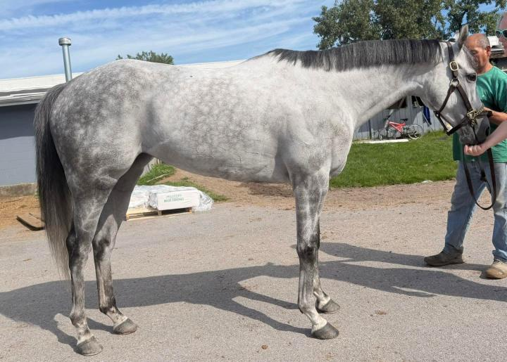
TASTY WAVE, 2019, 16.1h grey mare
Located at the Finger Lakes Race Track in Farmington, NY (near Rochester, NY).
As we walked across the backside to meet this appointment, we were cautioned that this mare has just raced a few days prior so she might be a bit “up”. So, we anticipated seeing a bit of a “spicy” girl. Instead, we met a very classy and dignified lady.
She was described to us as follows: very sound, quiet, sweet, gorgeous, and well liked in the barn. She’s good in her stall and loves to be allowed some time to hang out and graze on the lawn around the backside. We were told that to ride, she has a strong, forward gallop but no naughty behavior. She has spent down time at the farm and we were told that she likes to unwind when she is there. And that’s pretty much what we observed! We suspect that she is a girl who enjoys having a job, understands what is expected, and strives to excel. She a seasoned campaigner with a 7-6-7 record in her 45 starts. This is a testament to her work ethic, soundness, durability, functionally solid conformation, and sensible brain.
We found this pretty, gray girl to be a complete professional- she was quiet, cooperative, and posed easily for us. She is well put together- solid and correct with a long, nicely sloping shoulder, good bone, and has big, beautiful eyes. She jogged politely matching her handler’s pace displaying a glimpse of her athletic movement.
Tasty Wave is by the popular sire Central Banker out of a Latent Heat (Marias Mon!) mare. Her pedigree suggests she bred to be athletic and ammy-friendly. Now seven years old, her connections want to retire her while she is “still happy and sound” to set her up for success in her next career. If you love grays, and appreciate a good, hard-working mare then you should definitely check this one out. We think she is a delicious morsel!
Please note that references will be required and checked prior to being able to purchase this horse. Please see our post pinned to the top of our FB page for more information.
Contact: Desarae Ferrara (585) 709-2627 (text preferred)
Price: $3,500, neg.
A PPE is always recommended. For information about vet practices available to do PPEs, and other important information about the buying process, please see the page. How to Buy
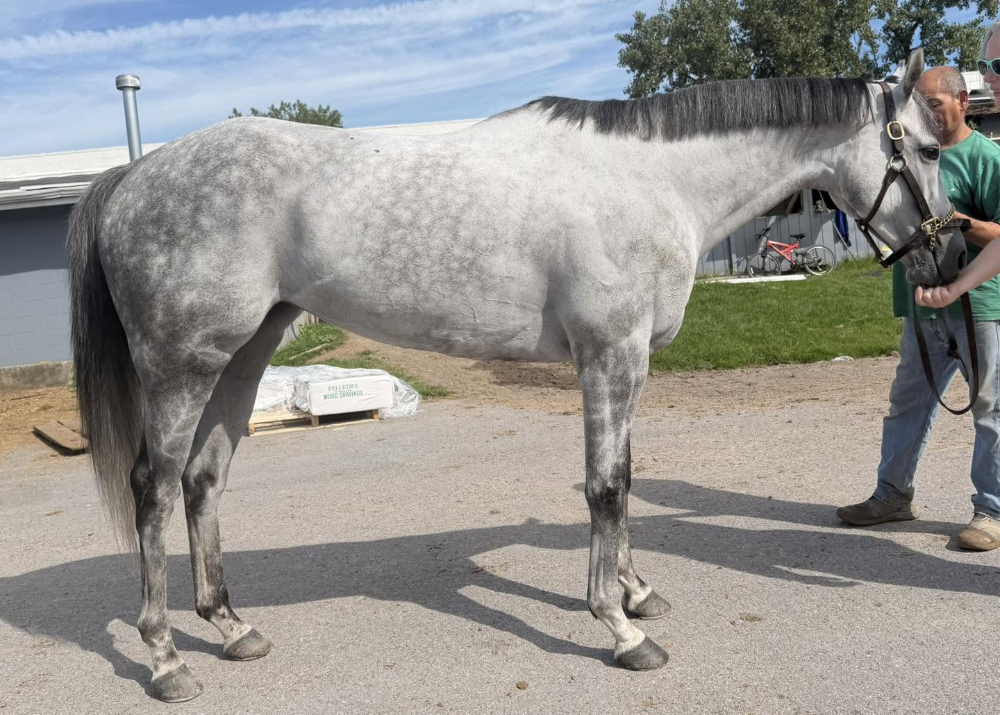
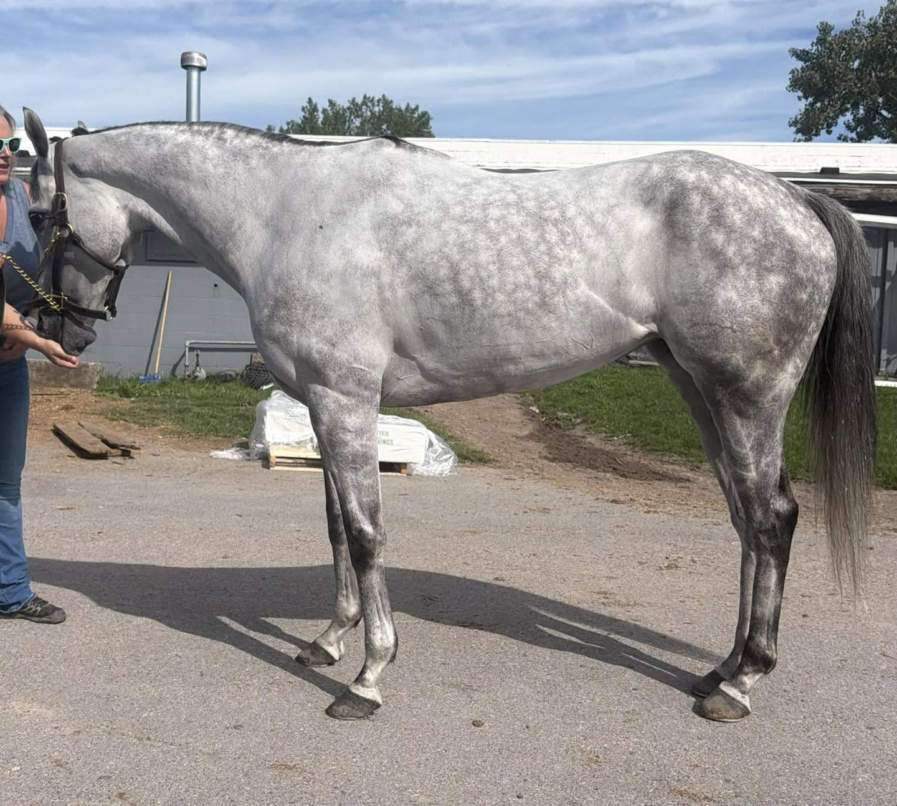
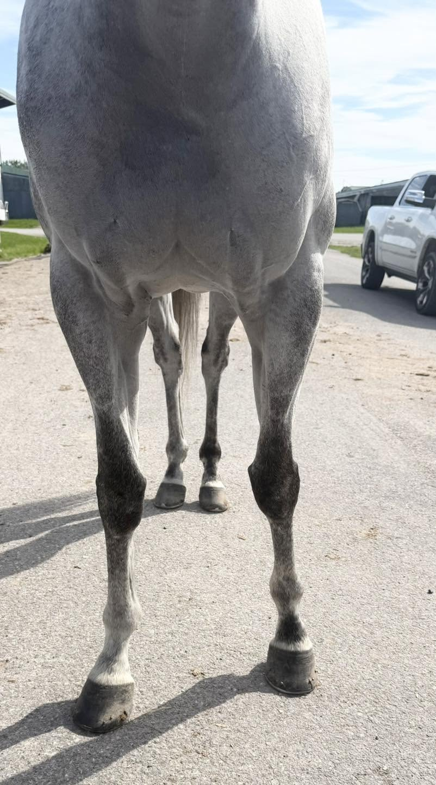
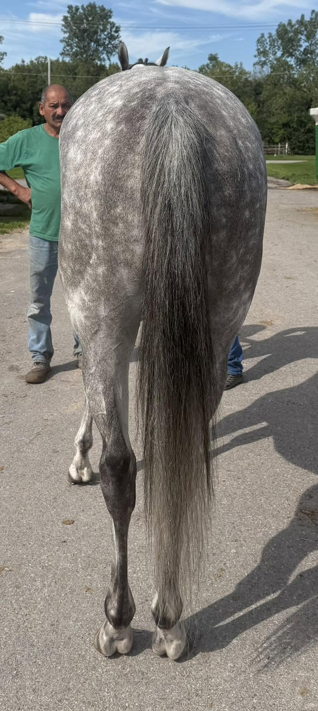
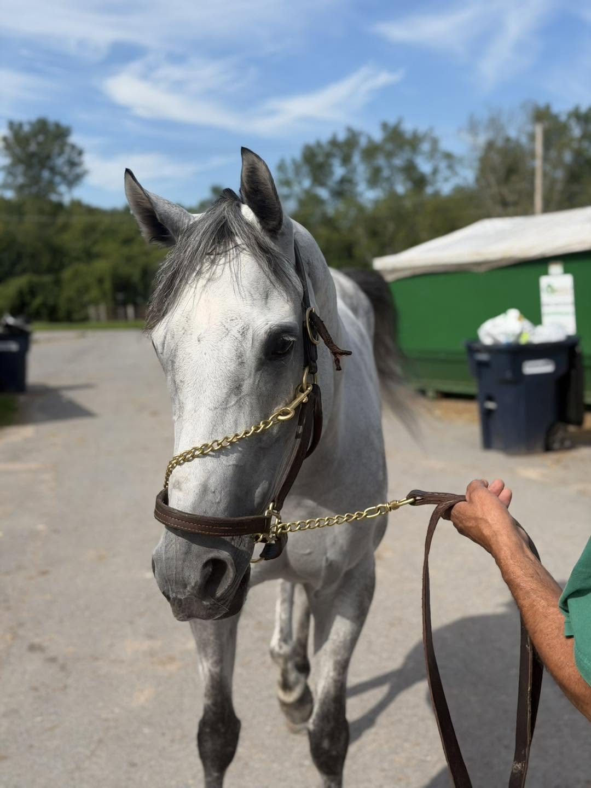
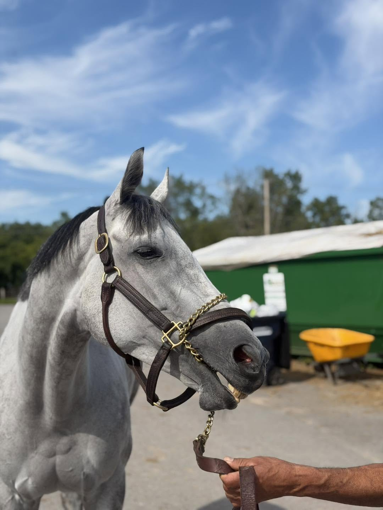
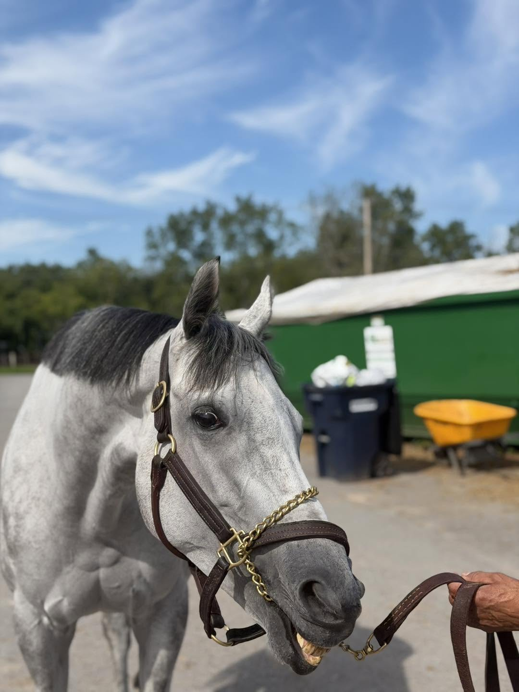
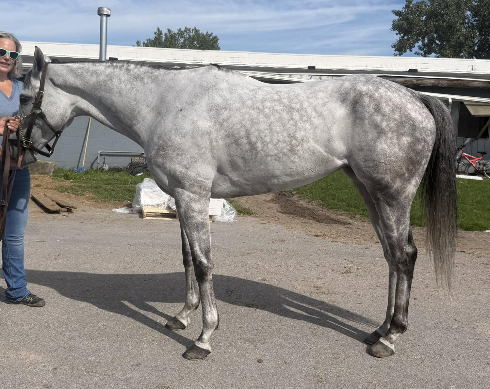
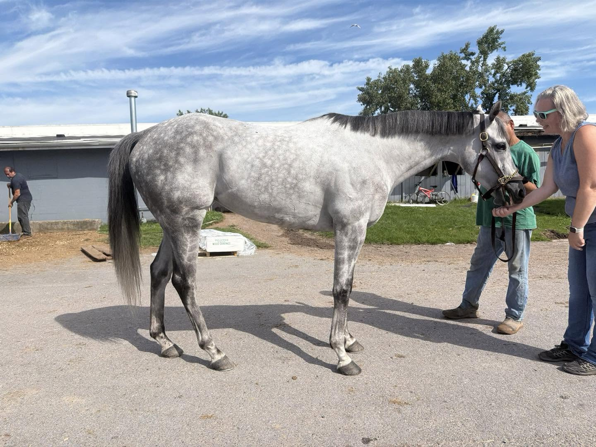
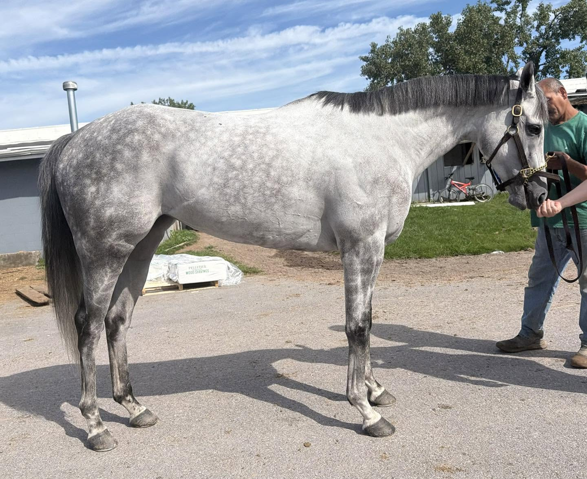